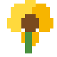
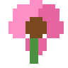
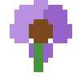

Un pequeño regalo interactivo: busca en el jardín de noche y encuentra las flores amarillas antes de armar tu ramo. 💛
Muévete por el jardín, toca las flores amarillas y arma tu ramo. Así de simple.
Usa las teclas para caminar por el jardín en las cuatro direcciones.
Solo las flores amarillas cuentan. Las demás son parte del paisaje.
Cuando encuentres las 8 flores amarillas, se arma un ramo con una sorpresa.
Encuentra las 8 flores amarillas escondidas entre las demás 🌼
Muévete con W A S D o las flechas.